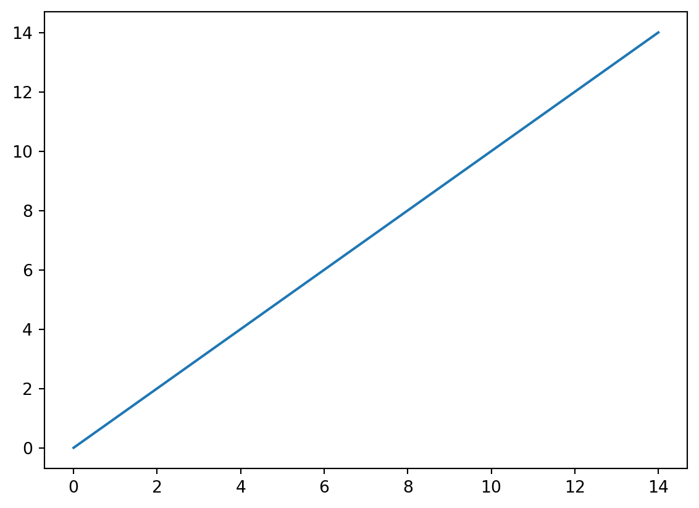
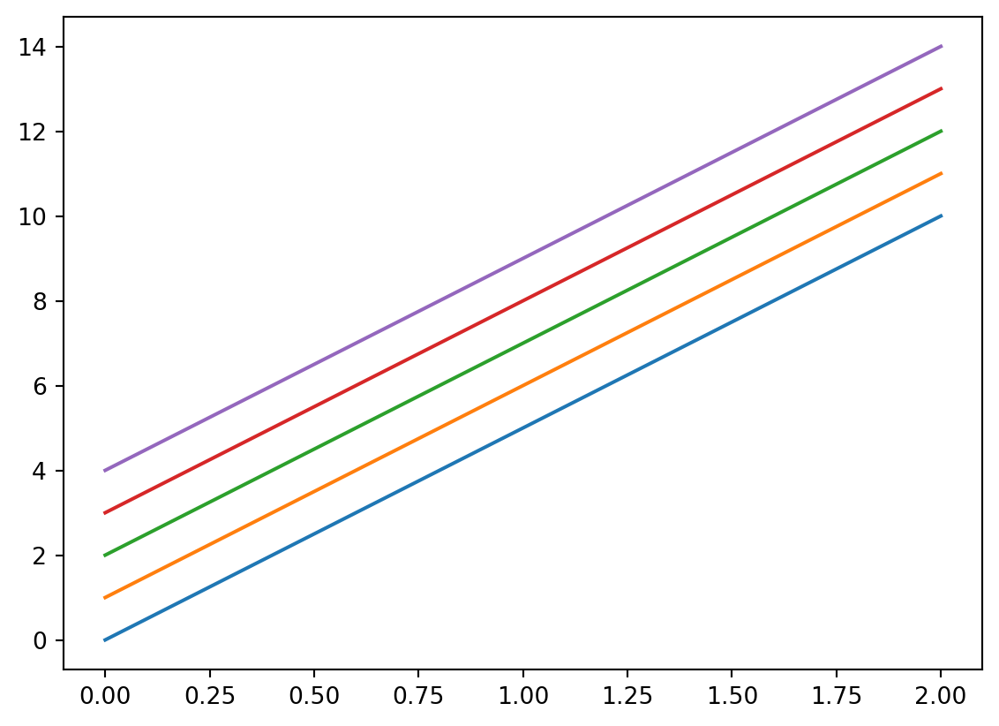
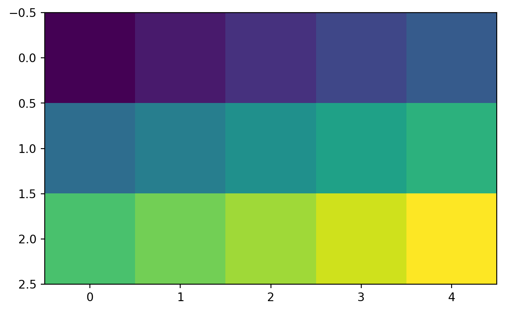
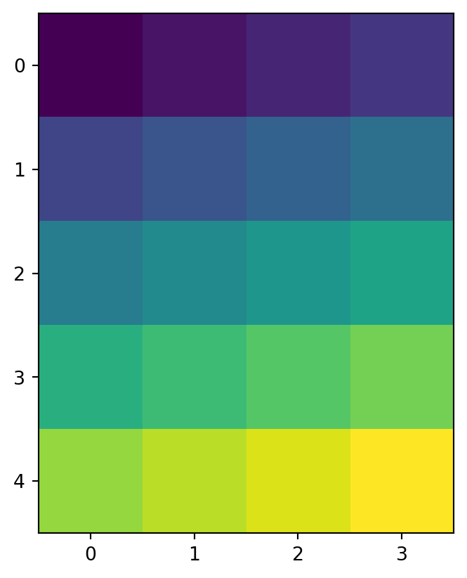
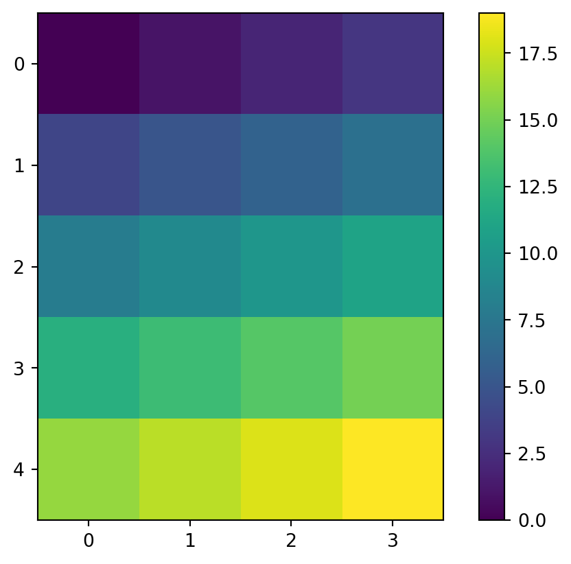
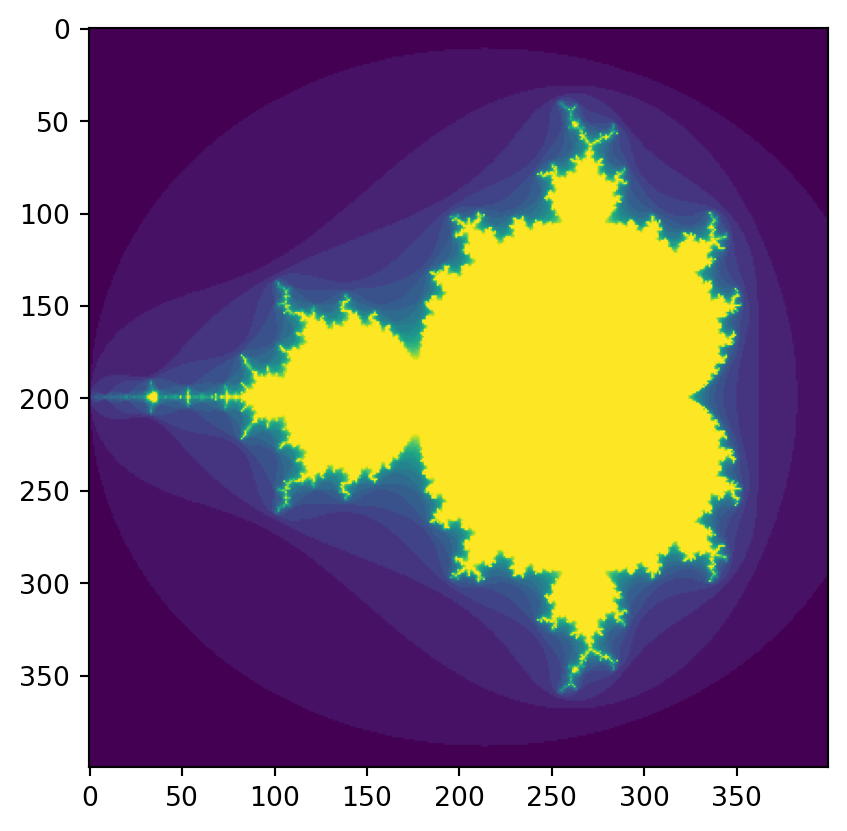

Numpy is the highly-optimized, super-fast workhorse that underlies much of the scientific computing stack see Harris et al. 2020 in Nature for evidence.
Code
import numpy as np# We're also going to want to look at matrices, so let's import matplotlib too.# this import statement is more complex, but of key importance, it creates a plt object we'll use laterimport matplotlib.pyplot as plt# Create a 1 dimensional array 15 elements long. np.arange is a FAST version of python range()a = np.arange(15)print(a)
[ 0 1 2 3 4 5 6 7 8 9 10 11 12 13 14]
Now plot this ultra simple array using matplotlib.
Code
plt.plot(a)plt.show()

Reshape our array into a 2 dimensional array of size 3 by 5.
NOTE, numpy, and about 60% of computer programming, denotes things in terms of Row then Column (RC order) but some things, especially those that regard displaying pixels, denote things as x, y (which note is CR order)
Code
a = np.arange(15).reshape(3, 5)print(a)
[[ 0 1 2 3 4]
[ 5 6 7 8 9]
[10 11 12 13 14]]
That makes sense and kind we can kinda visualize the array in our head. Let’s plot it.
Code
plt.plot(a)plt.show()

The above show probably is not what you expected. It has interpreted it as five different lines, but we probably meant to think of it as a matrix. For this, use imshow() rather than plot().
Code
plt.imshow(a)plt.show()

6.1 Arrays as objects
The a variable we defined holds much more information than jsut the raw values. It also gives us useful information necessary for working with really big data.
Code
# a is an OBJECT, which has lots of useful attributes, such as:array_shape = a.shapeprint(array_shape)print(a.ndim)print(a.dtype.name)print(a.size)print(a.itemsize) #8 Pro-level question. Why does this return 8? Hint 8 * 8 = 64.print(type(a))
(3, 5)
2
int32
15
4
<class 'numpy.ndarray'>
6.2 Creating an array from values
Code
a = np.array([1,2,3,4]) # RIGHT# a = np.array(1,2,3,4) # WRONG: TypeError: array() takes from 1 to 2 positional arguments but 4 were given. Uncomment this to see what happens with error handling.# 2d versionb = np.array([(1.5,2,3), (4,5,6)])print('b\n', b)
b
[[1.5 2. 3. ]
[4. 5. 6. ]]
Code
# Creating an empty array of zeros # NOTICE the extra paranetheses.np.zeros((3, 4))# or ones.np.ones((2, 3), dtype=np.int16) # dtype can also be specified# or ones.r = np.random.random((3, 4)) # dtype can also be specified# print('r', r)# Or even faster, just "allocate the memory" with an empty matrix.c = np.empty((2,3))
6.3 Array math
Numpy is super smart about doing matrix math across multiple dimensions. Note how in the below, it correctly guesses we wanted to add things element-wise.
a [20. 30. 40. 50.]
b [0 1 2 3]
c [20. 29. 38. 47.]
Code
# ** is the exponent operator in pythond = b**2print('d', d)# Numpy also has handy array-enabled math operatorse =10*np.sin(a)print('e', e)# Con also create conditional arraysf = a<35print('f', f)
d [0 1 4 9]
e [ 9.12945251 -9.88031624 7.4511316 -2.62374854]
f [ True True False False]
6.4 Slicing Arrays
Sometimes you want to operate on a subset of an array. Slicing provies a high-performance way of doing this.
Code
a = np.arange(10)b = np.arange(12).reshape(3, 4)print(a)print(b)# Can access items directly, but need as many indices as there are dimensionsfirst_value = a[2]second_value = b[2, 3]print(first_value)print(second_value)
# Can also access "slices", which are denoted Start, Stop, Stepsizer = a[1: 9: 2]print(r)
[1 3 5 7]
Code
# If you leave out the number and just have the colon, that means you want to use the default. So below, the# ::2 is interpretted as Start:End:Every-Other.# 3:: would be Start at the third:End:All.# :: would just be all the values.r = a[::2]print(r)
[0 2 4 6 8]
Code
# A single colon means also means use the full thing.r = a[:]print(r)
[0 1 2 3 4 5 6 7 8 9]
Code
# Using slices, you can also set individual elements in the array:r[0] =33r[3:5] =44print('r', r)
r [33 1 2 44 44 5 6 7 8 9]
Code
# Setting in this way also can be done according to a condition:r[r <=6] =5print('r', r)
r [33 5 5 44 44 5 5 7 8 9]
Code
# Finally, an alternate and possibly more powerful way of setting conditional values is the np.where function# This function sets anywhere greater than 10 to be 12, otherwise it keeps it at whatever value was already in rr = np.where(r >10, 12, r)print('r', r)
r [12 5 5 12 12 5 5 7 8 9]
Finally, if you want to combine conditionals, when you’re working inside an array you need to use Parentheses, & for and and | for or, as below.
Code
d[(d >200) & (d <10000)] =33
6.5 Let’s talk about performance
Big data requires fast algorithms. Let’s introduce a slow way of applying an algorithm, and then the fast way.
Code
# Slowly looping over arraysfor i in a: r = i**(1/3.)print('r', r)
r 2.080083823051904
Code
# Slowly loop to get the sum of the arrayr =0for row in b:print('row', row)for value in row:print('value', value) r += valueprint('slow sum', r)
row [0 1 2 3]
value 0
value 1
value 2
value 3
row [4 5 6 7]
value 4
value 5
value 6
value 7
row [ 8 9 10 11]
value 8
value 9
value 10
value 11
slow sum 66
NOTE: Iterating over arrays here is just for illustration as it is VERY VERY SLOW and loses the magic of numpy speed. We’ll learn how to bet around this later by “vectorizing” functions, which basically means batch calculating everything in a vector all in one call. For now, here’s an example of the much faster version
Code
r = b.sum()print('fast sum', r)
fast sum 66
6.6 Diving into vectorized computation.
Here we are going to do matrix math, but using the fast numpy methods.
Code
# Vectorized multiplication (and broadcasting):# First lets make two arrays. This is the cannonical way of making example arraysa = np.arange(20).reshape(5, 4)b = np.arange(20).reshape(5, 4)print(a)print(b)
Let’s plot the results of this new f matrix we created.
Code
ax = plt.imshow(b)plt.show()

Looks very similar to above, so let’s add a colorbar to make clear this value is not just our starting array.
Code
ax = plt.imshow(b)plt.colorbar(ax)plt.show()

6.8 Plot Mandlebrot
With these tools, we can do all sorts of things. Just for fun, let’s end this section by defining a function for the Mandlebrot set and then plotting the function.
Code
def mandelbrot(h, w, maxit=20 ):"""Returns an image of the Mandelbrot fractal of size (h,w).""" y,x = np.ogrid[ -1.4:1.4:h*1j, -2:0.8:w*1j ] c = x+y*1j z = c divtime = maxit + np.zeros(z.shape, dtype=int)for i inrange(maxit): z = z**2+ c diverge = z*np.conj(z) >2**2# who is diverging div_now = diverge & (divtime==maxit) # who is diverging now divtime[div_now] = i # note when z[diverge] =2# avoid diverging too muchreturn divtimeplt.imshow(mandelbrot(400, 400))plt.show()

6.9 In-class exercise 3.1:
Again, I’ll call on a random table to showcase their results.
Create a 20 by 40 matrix of random values 0-1 (Hint: use the np.random.random function. Use VS Code’s built-in help to see what you should enteR).
Set the upper left quadrant to 1. (Hint: use slices)
Next, set the last COLUMN to 2.
Finally, change all values less than .5 to be 3. (Use np.where)